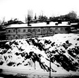
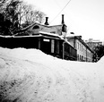
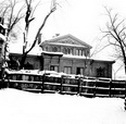
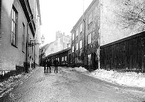
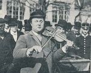

Södermalm i tid och rum
Forts fr Positivhalarnas gata
|
 Wallmanska teatern fr norr |
 Fr öster |
 Fr väster |
Längst ut på Lilla Glasbruksgatan, där denna numera plötsligt slutar framför rader av fyrkantiga små fönster i ett av Katarinavägens dystra höghus, ligger ett annat gammalt hus, nr 10, som också har ett ovanligt ursprung. Det är bara två våningar högt och visar en vacker och harmonisk västgavel mot nedre Mosebacketerrassen. Det var här den Wallmanska salongen fanns och där en del folkliga tillställningar, så kallade muffbaler, gick av stapeln. Så länge varade emellertid inte den världsliga fröjden, 1888 flyttade Frälsningsarméns tredje kår in i huset för att få säkert fotfäste i något som man då närmast ville karakterisera som ett slumdistrikt. |
{kind=link}
{kind=link}
{kind=link}
Många av dem bodde på Glasbruksgatorna eller också höll de till i de små kåkarna på Katarinabergen. Nu är ju det slags folk helt försvunna i Stockholm och redan på 90-talet kunde man nog märka att det var något fel på rekryteringen, men på 80-talet var praktiskt taget alla dessa berömdheter i aktion, om man undantar den tidigare nämnda "Blinda Kalle", som tillhörde August Blanches epok.
Lilla Glasbruksgatan 16 vid Katarina Kyrkobacke, västerut
En verklig "stjärna" bland dessa gatucelebriteter var "Vackra Rosen", som först spelade positiv, men sedan övergick till gitarr och nådde en oanad popularitet. Då han trädde in på en gård med en fiolspelande partner - en hette "Spel-Anton", en annan "Gubben Lindahl" - upphörde allt arbete i köken och fönstren garnerades av glada pigor. Han var lång och ståtlig och en verklig charmör, och det berättas att, "en flicka på krogen Ekorren på Götgatan för hans skull band ihop sig och dränkte sig i Årsta sjö".
|
 Stora Glasbruksgatan 40 på högra sidan, österut |
"Vackra Rosen", som hette Ros i efternamn och lär ha varit oäkta barn till en operasångerska, skrev också visor som han själv föredrog, bland annat uppges han som författare av "Hissvisan" från 1883, en lyrisk kommentar till den nya Katarinahissen, av "Flickorna i Stockholm" och "Knoddvisan". Hans bravurnummer var dock "I rosens doft", vilken han sjöng med stor känsla. Som alla idoler var han en smula överlägsen mot sin publik och då flera samtidigt ville hylla honom med en slant brukade han säga: "En i sänder så det inte blir trängsel." Han lär på 90-talet ha bott i nummer 40 Stora Glasbruksgatan, där flera gatuartister höll till. Omsider gifte sig charmören med en krögerska på norr och fick det mindre muntert. |
{kind=link}
|
Ett verkligt grepp om sin publik hade även den nästan helt blinde Siklund, kallad "Blinken". Han vevade på vardagarna positiv på gårdarna och på söndagarna spelade han fiol på Djurgården. Hans pappa brukade skjuta positivet och hjälpa honom till rätta. De visor "Blinken" föredrog var ofta en smula oanständiga och avpassade för de gardister på permission, som utgjorde en viktig del av åhörarskaran.
|
 "Blinken" Siklund |
{kind=link}
{kind=link}
|
De sista mera kända gatumusikanterna var väl Djurgårds-Kalle och hans Emma, som verkade ännu på 1920-talet, men som saknade den personliga tusch som ger en gatuartist verklig popularitet. De sjöng känsliga visor som "Ung Gösta mötte Karin sin på skogens stig", "Italienska flickan" och "Lejonbruden" i duett.
Emma var dotter till en blind positivspelare och hade börjat gå på gårdar redan vid åtta års ålder, partnern Djurgårds-Kalle, som hette Axel Karlsson "i det civila" hade hon valt ut efter att ha prövat flera som av olika skäl visat sig olämpliga. "Djurgårds-Kalle" uppträdde helst på gårdar där det fanns flickställen i husen, för enligt hans erfarenhet "gav horor mest". |

|